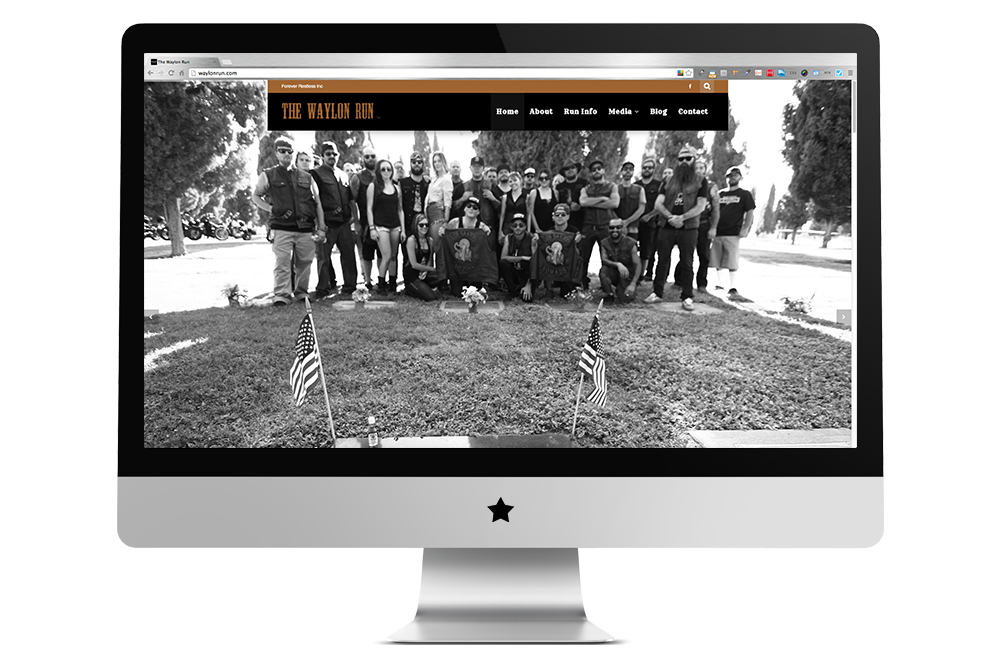
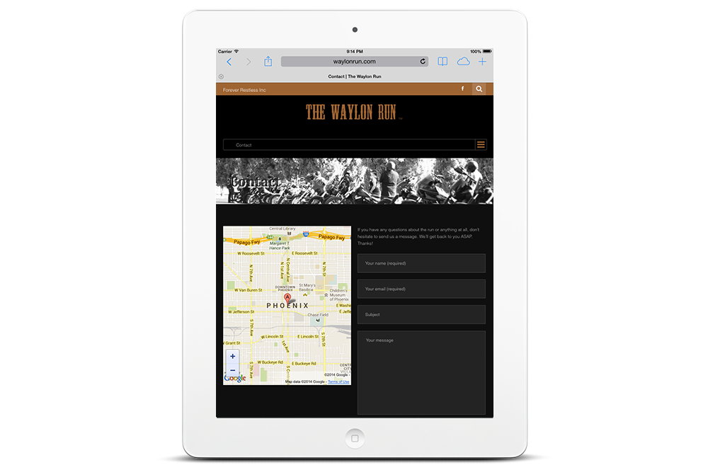

The Waylon Run
- 


- 
Project info
Background
The Waylon Run is an annual motorcycle run event put on by Forever Restless Inc in partnership with Los Santos Motorcycle Club. The purpose of the Waylon Run is to honor and celebrate the legendary "outlaw" country musician, Waylon Jennings, who unfortunately passed away in 2002 due to diabetes health issues. Year 2014 will be their 5th year doing Waylon Run and over the years the run has gained attraction and only gotten bigger.
Forever Restless decided it was time for a web site that would present information about the run such as flyers, run details, background information, venue information, photos from past years, videos, a blog, and way to contact them online. They wanted a site that would scale over time as the event got bigger and the ability to add content themselves.
Process and Solution
Because the client required the ability to add and edit content themselves, I built their site in Wordpress. This event takes place in Phoenix, AZ and has a country theme to it. So I wanted to design the UI with that in mind. After selecting a WP theme that would have everything the site needed, I began customizing the look and feel of the site to match the theme of the event.
Google Analytics has shown the client in the past that a big percentage of their users access the Waylon Run site from their mobile devices, so it was also crucial that this site be responsive in its design. After the site launched, the client saw an immediate spike and continuous increased traffic to the site and exposure for the Waylon Run. The event has picked up more sponsors then ever before and recieved tons of positive feedback from users. Forever Restless is expecting the biggest turn out for the event they've ever had.